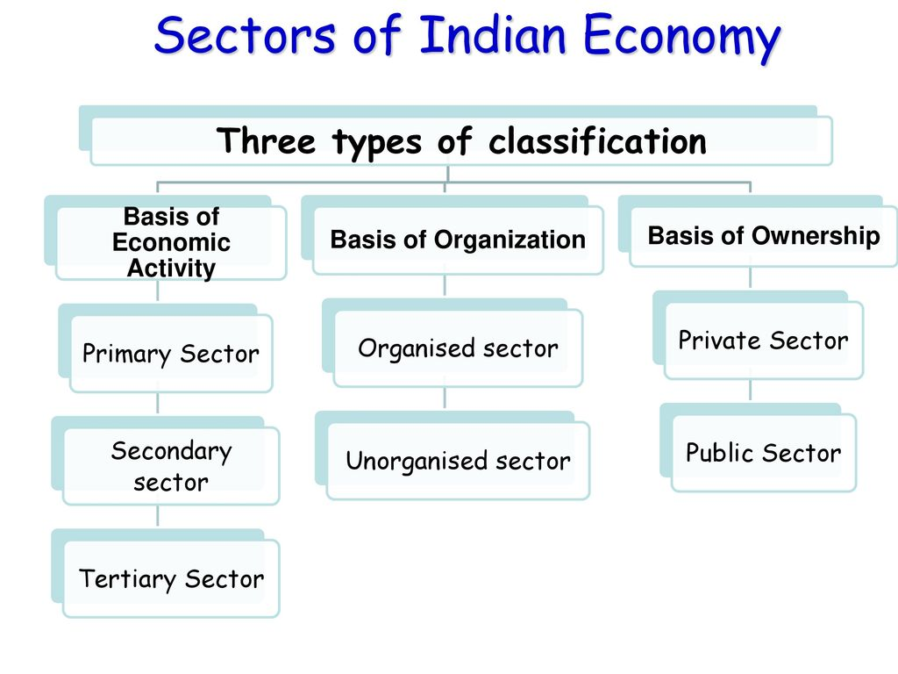
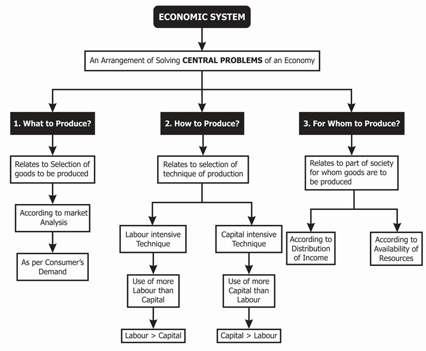
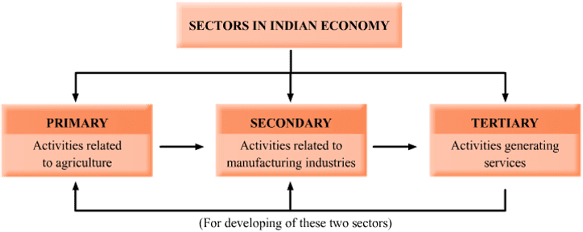

THE INDIAN ECONOMY
The Indian Economic system

They are three sectors in the Indian economy, they are; primary economy,
secondary economy, and tertiary economy. In terms of operations,
the Indian economy is divided into organized and unorganized. While for ownership,
it is divided into the public sector and the private sector.

An economic system is a means by which societies or governments
organize and distribute available resources, services, and goods across a geographic region or country.
Economic systems regulate the factors of production, including land, capital, labor.

All the three sectors of the economy are interdependent.For example ,Taking iron ore as an example:
Primary sector involves basic activities like fishing,agricultre including mining.By the process of mining,iron ore is obtained.
But iron ore cannot be used as it is without futher proccesing.This is done in the secondry sector.
Then this Iron and materials made out from this is taken to market by using transportation which is a teritiary sector.
From these examples we can say that in now a days interdependency of these 3 sectors is unavoidable.
Traditional economic system
The traditional economic system is based on goods, services, and work, all of which follow certain established trends.
It relies a lot on people, and there is very little division of labor or specialization. In essence, the traditional economy is very basic
and the most ancient of the four types.
Some parts of the world still function with a traditional economic system. It is commonly found in rural settings in
second- and third-world nations, where economic activities are predominantly farming or other traditional income-generating activities.
There are usually very few resources to share in communities with traditional economic systems. Either few resources occur naturally in
the region or access to them is restricted in some way. Thus, the traditional system, unlike the other three, lacks the potential to
generate a surplus. Nevertheless, precisely because of its primitive nature, the traditional economic system is highly sustainable.
In addition, due to its small output, there is very little wastage compared to the other three systems.
Command economic system
In a command system, there is a dominant, centralized authority – usually the government – that controls a significant portion of the
economic structure. Also known as a planned system, the command economic system is common in communist societies since production decisions
are the preserve of the government.
If an economy enjoys access to many resources, chances are that it may lean towards a command economic structure.
In such a case, the government comes in and exercises control over the resources. Ideally, centralized control covers valuable resources such as gold or oil. The people regulate other less important sectors of the economy, such as agriculture.
In theory, the command system works very well as long as the central authority exercises control with the general
population’s best interests in mind. However, that rarely seems to be the case. Command economies are rigid compared to other systems.
They react slowly to change because power is centralized. That makes them vulnerable to economic crises or emergencies,
as they cannot quickly adjust to changed conditions.
Market economic system
Market economic systems are based on the concept of free markets. In other words, there is very little government interference.
The government exercises little control over resources, and it does not interfere with important segments of the economy.
Instead, regulation comes from the people and the relationship between supply and demand.
The market economic system is mostly theoretical. That is to say, a pure market system doesn’t really exist.
Why? Well, all economic systems are subject to some kind of interference from a central authority. For instance,
most governments enact laws that regulate fair trade and monopolies.
From a theoretical point of view, a market economy facilitates substantial growth.
Arguably, growth is highest under a market economic system.
A market economy’s greatest downside is that it allows private entities to amass a lot of economic power,
particularly those who own resources of great value. The distribution of resources is not equitable because
those who succeed economically control most of them.
Mixed system
Mixed systems combine the characteristics of the market and command economic systems. For this reason, mixed systems are also known as
dual systems. Sometimes the term is used to describe a market system under strict regulatory control.
Many countries in the West follow a mixed system. Most industries are private, while the rest, comprised primarily of public services,
are under the control of the government.
Mixed systems are the norm globally. Supposedly, a mixed system combines the best features of market and command systems.
However, practically speaking, mixed economies face the challenge of finding the right balance between free markets and government control.
Governments tend to exert much more control than is necessary.